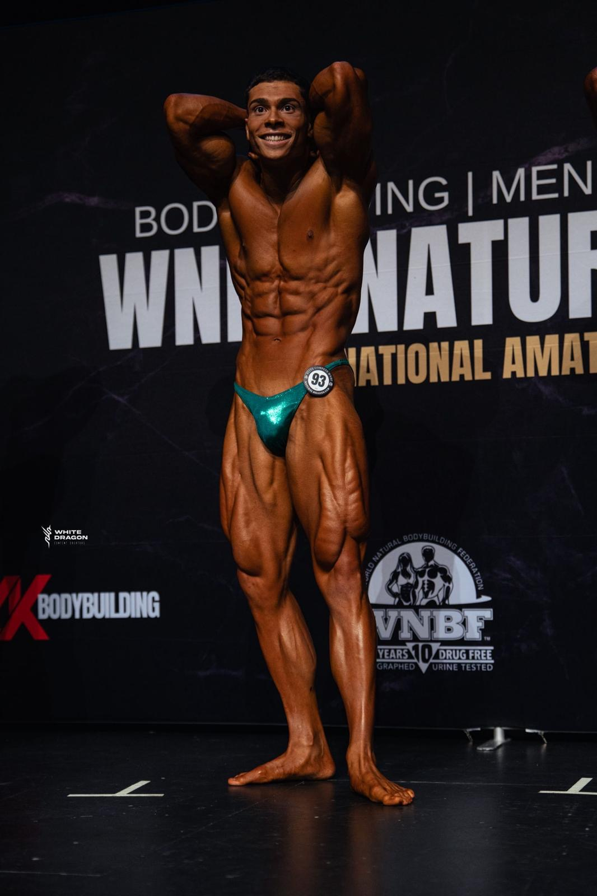
RECUPERAÇÃO ESTRATÉGICA
Após o palco, o corpo exige restaurar o equilíbrio hormonal e metabólico, mas o foco nunca desliga. É a fase de recuperar biomarcadores e preparar as fundações para o próximo ciclo.
MELHORIA ESTRUTURAL
Tempo de corrigir pontos fracos, atacar assimetrias e otimizar alavancas biomecânicas. É no silêncio do off-season que um físico verdadeiramente competitivo é construído.
CONSTRUÇÃO DE TECIDO
No culturismo natural jogamos o jogo longo. Com um excedente calórico controlado e sobrecarga progressiva constante, cada sessão serve para adicionar tecido muscular real e bater marcas.
DESCOMPRESSÃO DO SNC
Gerir a fadiga do Sistema Nervoso Central é tão decisivo quanto treinar até perto da falha. Recarregar energias, manter a consistência e alimentar a fome para a próxima época.
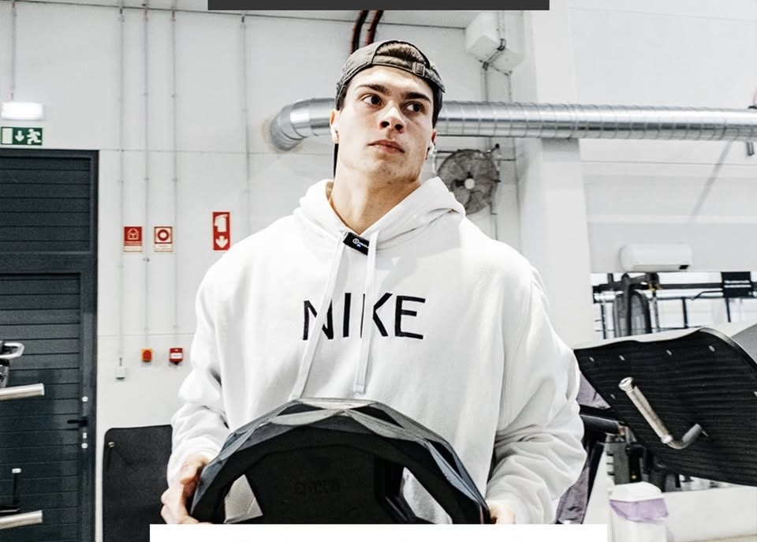
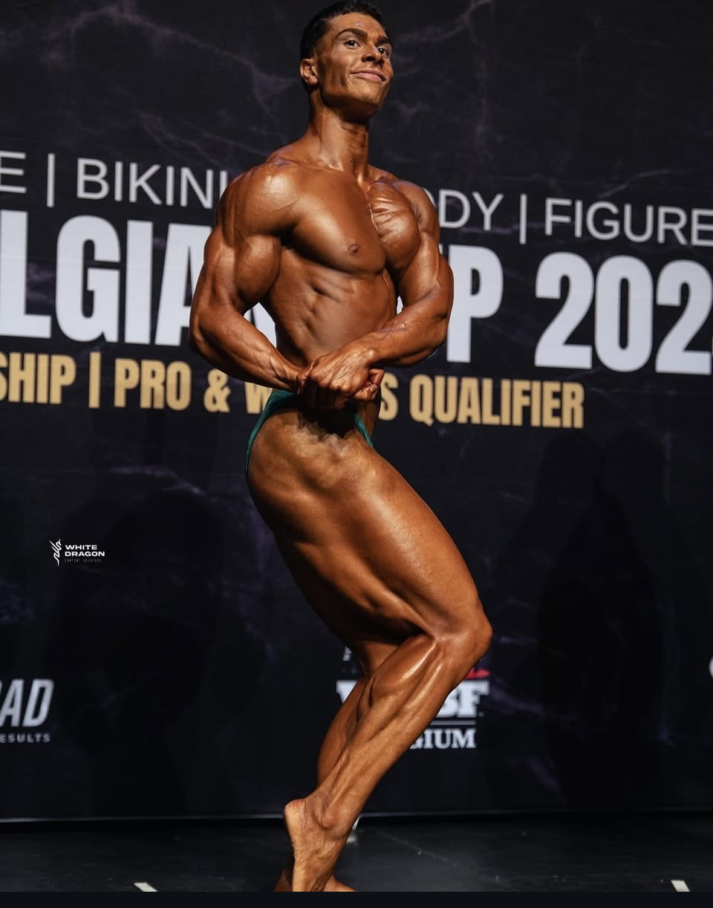
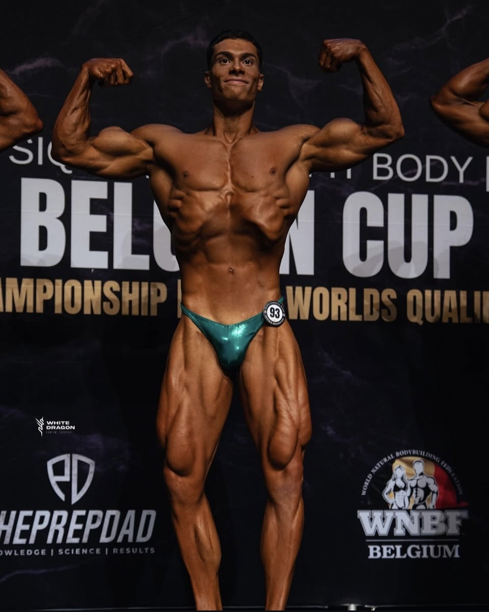
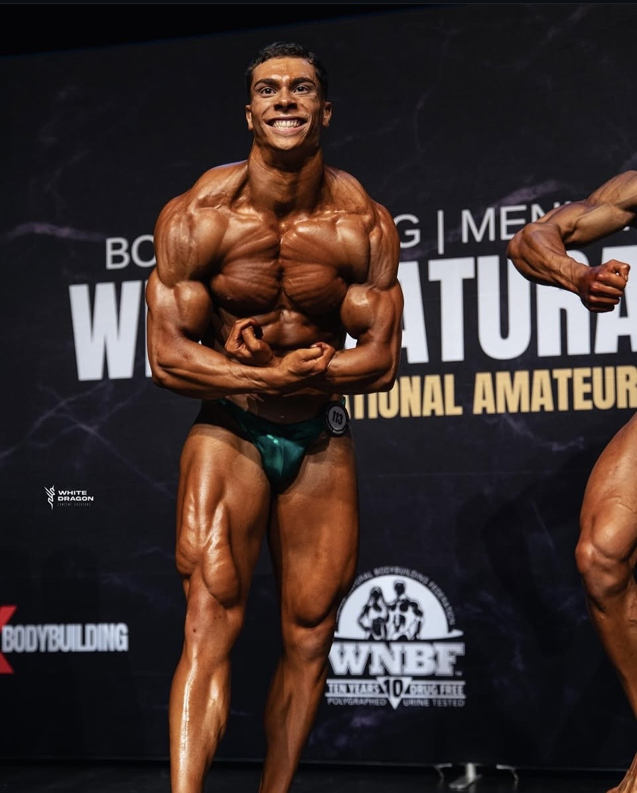
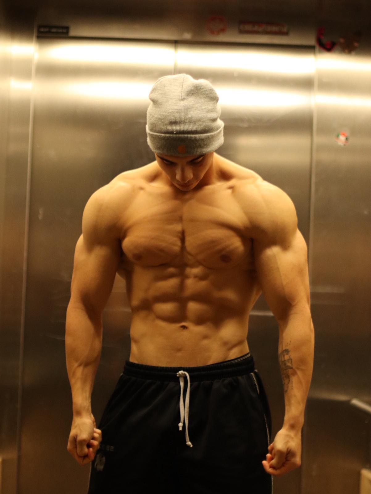

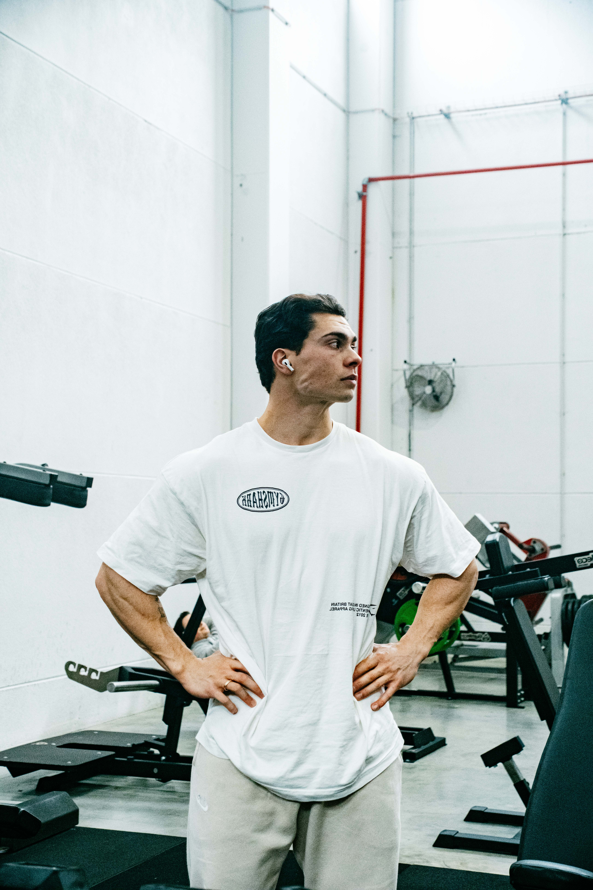
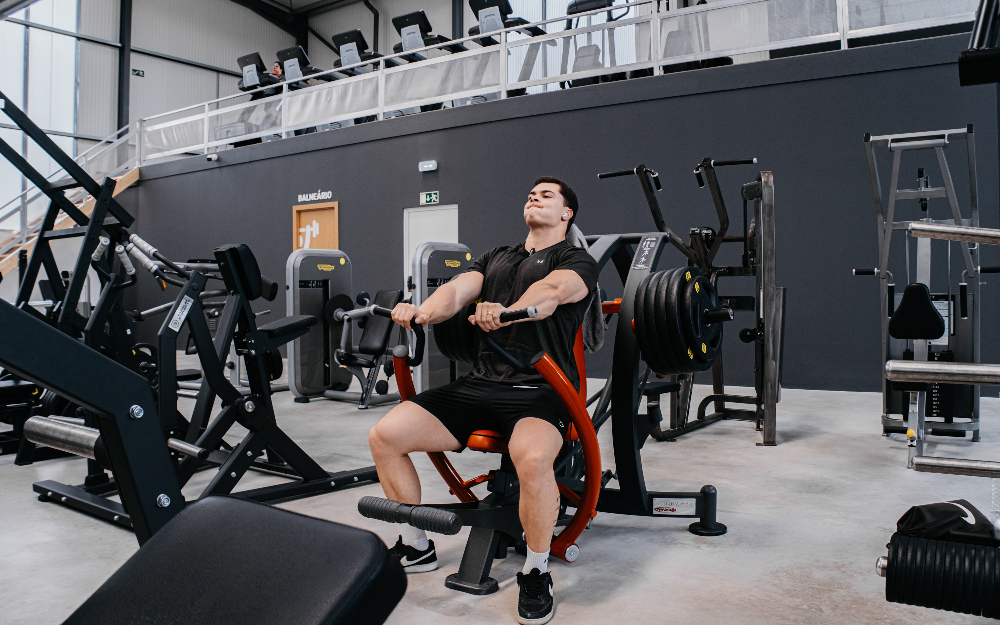
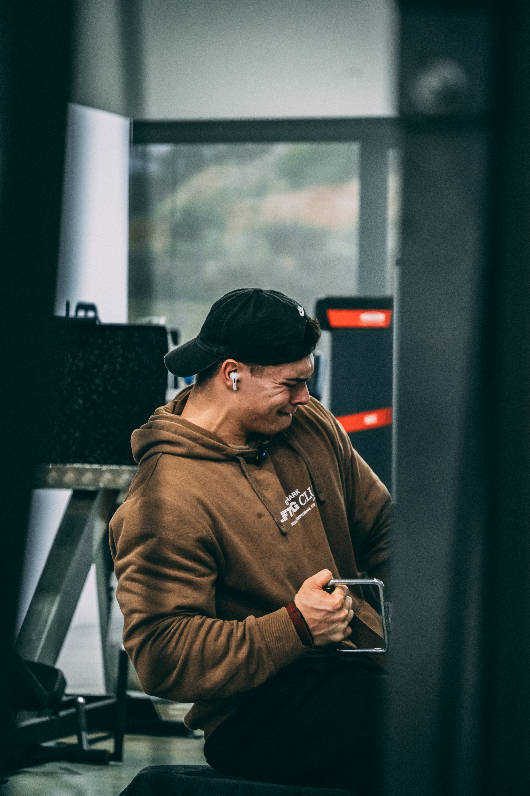
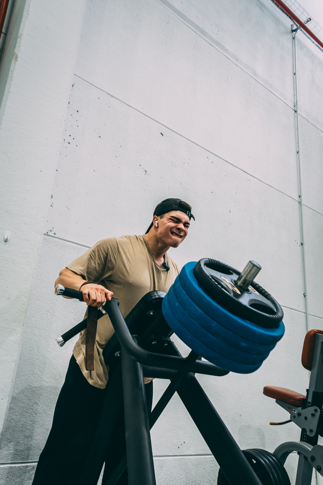
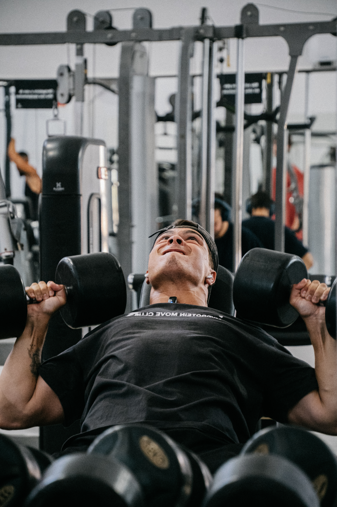
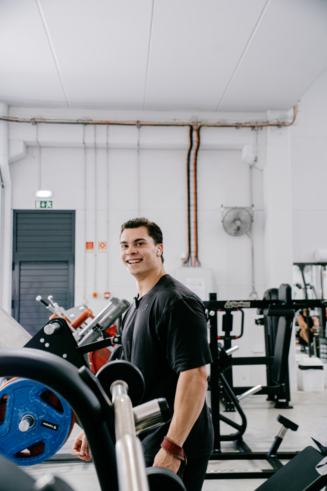
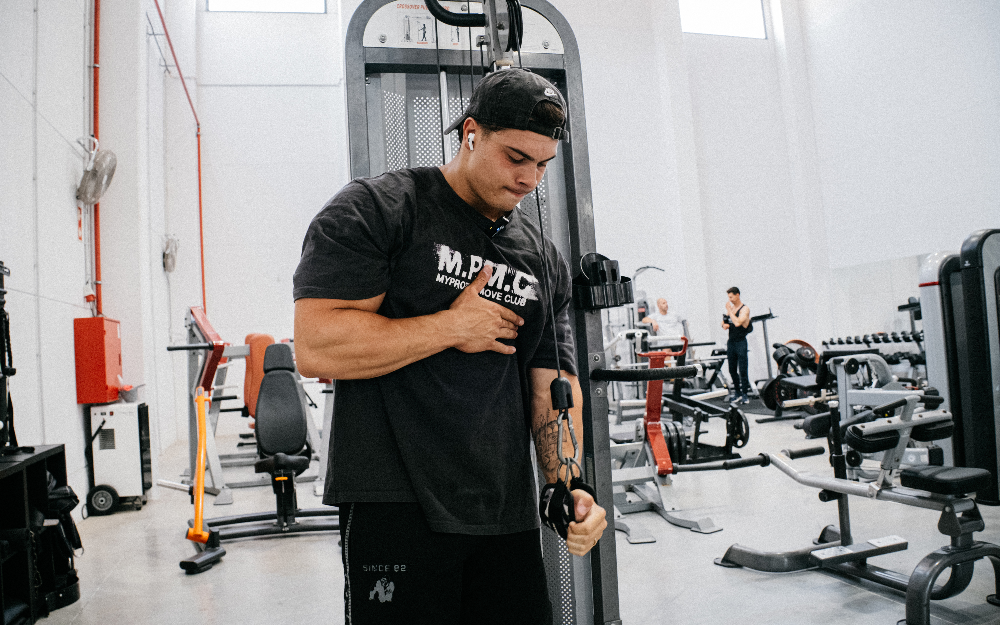
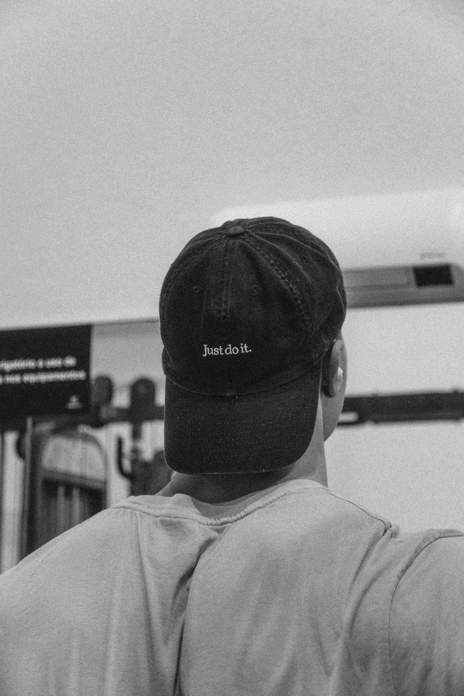
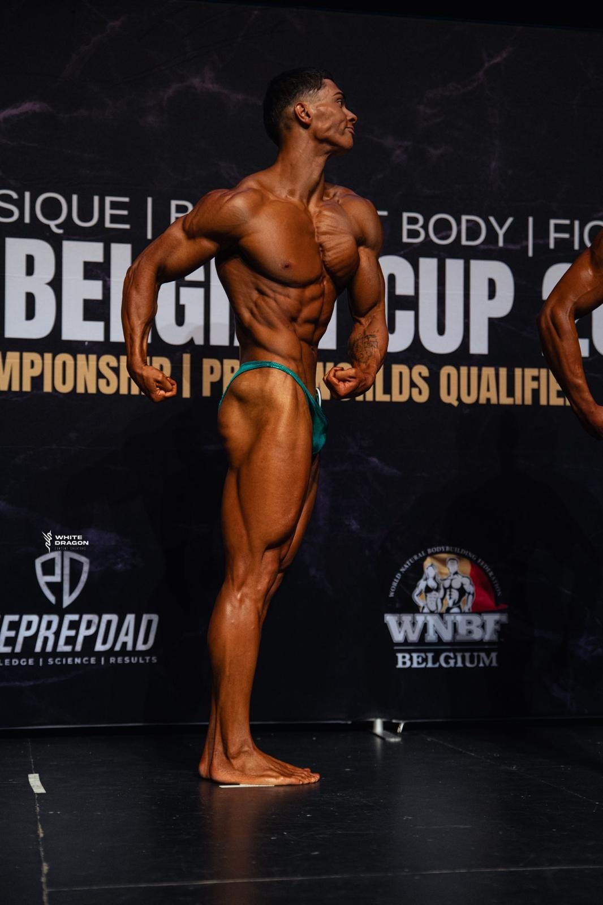